Gestion integral de empleados - Datos personales, laborales, turnos, honorarios y desempeno
El modulo de Nomina es el centro de gestion de empleados del sistema STA.RH. Aqui se administra toda la informacion relacionada con cada trabajador:
El formulario de empleado se organiza en varias pestanas:
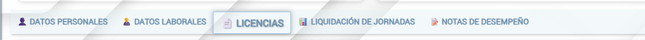
Esta seccion contiene los datos basicos del empleado:
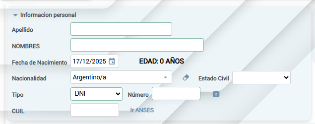
| Apellido/Nombres | Nombre completo del empleado |
| Fecha Nacimiento | Calcula automaticamente edad y proximo cumpleaños |
| Nacionalidad | Pais de origen (por defecto: Argentina) |
| Estado Civil | Soltero, Casado, Divorciado, etc. |
| Tipo/Numero (DNI) | Documento Nacional de Identidad (unico en el sistema) |
| CUIL | Codigo Unico de Identificacion Laboral (XX-XXXXXXXX-X) |
💡 Consulta ANSES
Junto al campo CUIL hay un enlace "Ir ANSES" que permite abrir directamente la consulta de ANSES para verificar los datos del empleado.
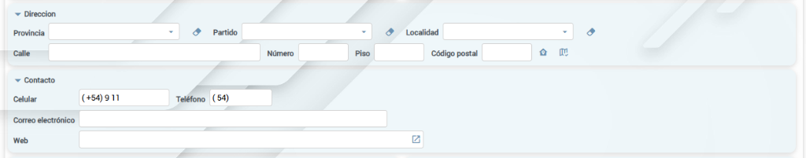
| Provincia/Partido/Localidad | Ubicacion geografica con selectores en cascada |
| Calle/Numero/Piso | Direccion completa del domicilio |
| Codigo Postal | Se puede obtener automaticamente con el boton de busqueda |
| Celular | Numero de telefono movil con codigo de area |
| Telefono | Linea fija (opcional) |
| Correo Electronico | Email de contacto del empleado |
| Web | Sitio web o red social (opcional) |
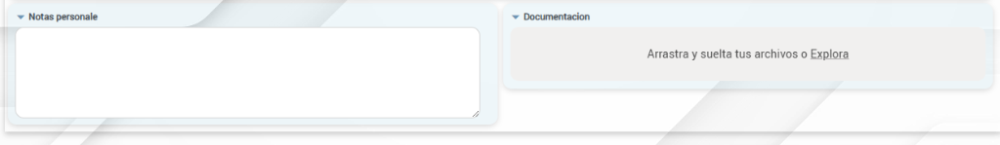
| Notas Personale | Campo de texto libre para observaciones adicionales sobre el empleado |
| Documentacion | Archivos adjuntos (contratos, certificados, etc.) - Arrastrar o explorar para cargar |
| Foto | Imagen del empleado (max 200KB) - aparece en el panel lateral |
Esta pestana contiene los datos de empleo y configuracion del empleado:
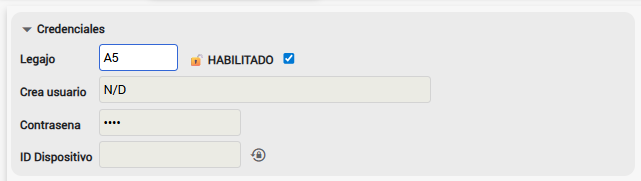
| Legajo | Codigo unico del empleado (ej: A5), debe coincidir con el lector biometrico |
| HABILITADO | Checkbox que indica si el empleado esta activo en el sistema |
| Crea usuario | Se genera automaticamente (ej: JPérez@A5) |
| Contrasena | Encriptada, puede ser blanqueada por el administrador con el boton ⊘ |
| ID Dispositivo | Identificador del celular para la app movil, se blanquea con el boton ⊘ |
⚠️ Blanquear Credenciales
Los botones ⊘ junto a Contrasena e ID Dispositivo permiten blanquear estos valores. Util cuando el empleado olvida su contrasena o cambia de celular.
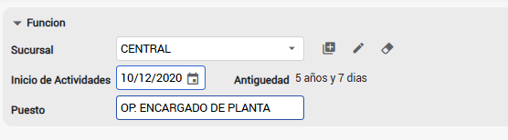
| Sucursal | Ubicacion donde trabaja el empleado (ej: CENTRAL) |
| Inicio de Actividades | Fecha de ingreso a la empresa |
| Antiguedad | Calculada automaticamente (ej: 5 años y 7 dias) |
| Puesto | Cargo o funcion (ej: OP. ENCARGADO DE PLANTA) |
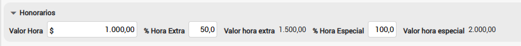
| Valor Hora | Valor monetario de la hora normal (ej: $1.000,00) |
| % Hora Extra | Porcentaje adicional para horas extras (ej: 50%) |
| Valor hora extra | Calculado automaticamente (ej: $1.500,00) |
| % Hora Especial | Porcentaje adicional para feriados (ej: 100%) |
| Valor hora especial | Calculado automaticamente (ej: $2.000,00) |
💰 Tecnologia Snapshot
Cada vez que se genera un registro de auditoria, el sistema "fotografia" los valores monetarios vigentes. Si el sueldo cambia despues, los registros anteriores mantienen los valores historicos correctos.
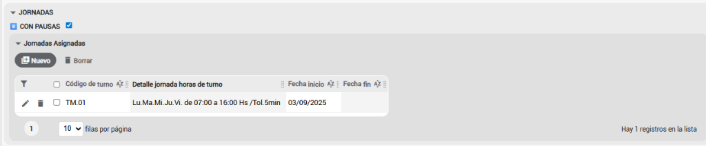
| CON PAUSAS | Checkbox que indica si el empleado puede registrar pausas durante la jornada |
| Codigo de turno | Identificador del turno asignado (ej: TM.01) |
| Detalle jornada | Dias de la semana, horario y tolerancia (ej: Lu.Ma.Mi.Ju.Vi. de 07:00 a 16:00 Hs /Tol.5min) |
| Fecha inicio | Desde cuando aplica este turno |
| Fecha fin | Hasta cuando aplica (vacio = turno indefinido/rotativo) |
💡 Nuevo Turno
Use el boton Nuevo para agregar jornadas adicionales. Si asigna multiples turnos sin fecha fin, rotaran semanalmente.
El sistema de jornadas permite asignar turnos de forma flexible a cada empleado. Los turnos se crean en el modulo Turnos Horarios y luego se asignan al personal desde la seccion Jornadas.
Para asignar un turno, use el boton Nuevo en la seccion "Jornadas Asignadas". Puede seleccionar un turno existente, editarlo o crear uno nuevo.
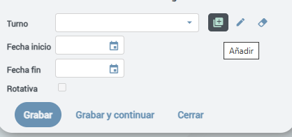
| Turno | Seleccionar de la lista desplegable (turnos ya creados) |
| 🔍 (Buscar) | Boton para buscar y seleccionar un turno del catalogo |
| ✏️ (Editar) | Modificar el turno seleccionado (abre formulario completo) |
| 🗑️ (Borrar) | Desvincular el turno de esta asignacion |
| Añadir | Crear un nuevo turno directamente desde aqui |
| Fecha inicio | Desde cuando aplica este turno (requerido) |
| Fecha fin | Hasta cuando aplica (vacio = turno indefinido) |
| Rotativa | Indica si participa en rotacion semanal |
Al presionar Añadir o Editar, se abre el formulario completo para configurar un turno:
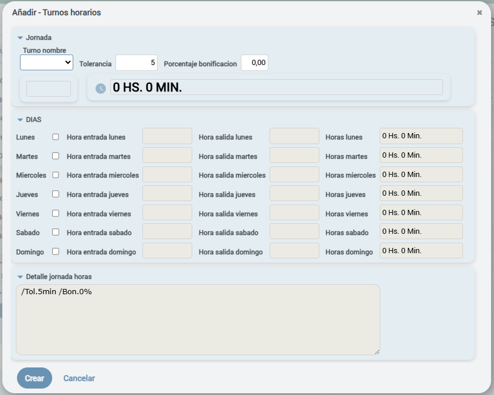
| Turno nombre | Tipo de turno: MAÑANA, TARDE, NOCHE, ESPECIAL |
| Tolerancia | Minutos de tolerancia para llegadas/salidas (ej: 5 min) |
| Porcentaje bonificacion | Bonificacion adicional para este turno (ej: 15% turno noche) |
| Codigo | Se genera automaticamente: TM.01, TT.02, TN.01 segun tipo |
| Total Horas | Suma semanal calculada automaticamente (ej: 0 HS. 0 MIN.) |
Configure cada dia de la semana marcando el checkbox y definiendo los horarios:
| Checkbox dia | Activa/desactiva el dia como laboral |
| Hora entrada | Hora de ingreso para ese dia |
| Hora salida | Hora de egreso para ese dia |
| Horas dia | Duracion calculada automaticamente (ej: 9 Hs. 0 Min.) |
ℹ️ Turnos Nocturnos
El sistema soporta turnos que cruzan la medianoche. Por ejemplo, entrada 22:00 y salida 06:00 calcula correctamente 8 horas de trabajo.
Resumen compacto que agrupa dias con el mismo horario. Ejemplo:
Lu.Ma.Mi.Ju.Vi. de 07:00 a 16:00 Hs /Tol.5min /Bon.0%
| Tipo | Fecha Fin | Descripcion |
|---|---|---|
| Turno Fijo | Vacia (null) | Un solo turno asignado indefinidamente. Trabaja siempre el mismo horario. |
| Turno Rotativo | Vacia (null) | Multiples turnos sin fecha fin que rotan semanalmente (ej: semana 1 manana, semana 2 tarde). |
| Turno Programado | Definida | Turno temporal con periodo especifico (ej: del 15/12 al 31/12 por temporada). |
💡 Prioridad de Turnos
Los turnos programados (con fecha fin definida) tienen prioridad sobre los rotativos. Esto permite asignar turnos temporales que "sobreescriben" la rotacion normal sin modificarla.
⚠️ Codigo Unico
Cada turno genera un codigo unico automaticamente (TM.01, TT.02, etc.). El prefijo indica el tipo: TM=Mañana, TT=Tarde, TN=Noche, TE=Especial. Maximo 99 turnos por tipo.
Gestion completa de licencias, ausencias justificadas y permisos del empleado.
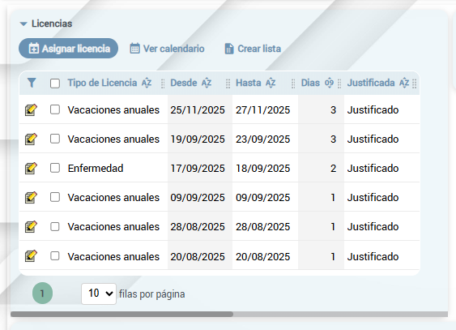
| Tipo de Licencia | Vacaciones anuales, Enfermedad, Maternidad, etc. |
| Desde / Hasta | Fechas de inicio y fin de la licencia |
| Dias | Cantidad de dias computados |
| Justificada | Indica si la licencia tiene certificado o documentacion |
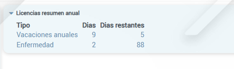
| Tipo | Categoria de la licencia (ej: Vacaciones anuales, Enfermedad) |
| Dias | Total de dias utilizados en el ano |
| Dias restantes | Dias disponibles segun la ley y antiguedad |
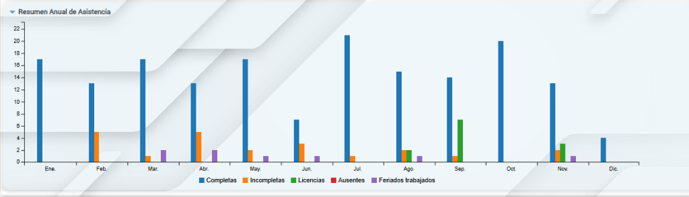
El grafico muestra por cada mes:
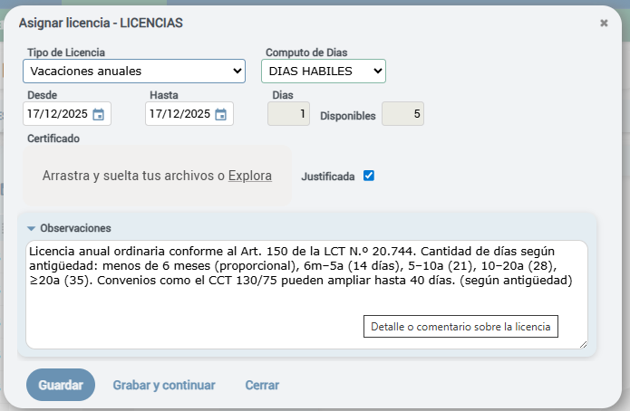
| Tipo de Licencia | Seleccionar del catalogo (Vacaciones anuales, Enfermedad, etc.) |
| Computo de Dias | DIAS HABILES o DIAS CORRIDOS segun corresponda |
| Desde / Hasta | Rango de fechas de la licencia |
| Dias / Disponibles | Cantidad calculada y dias disponibles restantes |
| Certificado | Cargar archivo de certificado medico o documentacion |
| Justificada | Marcar si la licencia esta debidamente justificada |
| Observaciones | Detalle adicional (ej: referencia a LCT Art. 150) |
ℹ️ Vacaciones segun LCT Art. 150
Los dias de vacaciones varian segun antiguedad: menos de 6 meses (proporcional), 6m-5a (14 dias), 5-10a (21), 10-20a (28), mas de 20a (35). Convenios colectivos pueden ampliar hasta 40 dias.
Consolidado de horas trabajadas por periodo con calculo de valores monetarios.
Seguimiento del desempeno del empleado mediante notas y calificaciones.
Muestra automaticamente el promedio de calificaciones del ano actual:
Lista cronologica de observaciones sobre el empleado, cada una con:
Boton para generar un informe completo del empleado incluyendo: asistencia mensual, horas trabajadas, licencias y evaluacion de desempeno.
El sistema permite registrar la direccion completa del empleado con coordenadas geograficas para visualizacion en mapa.
| Accion | Descripcion |
|---|---|
| Nuevo | Crear un nuevo empleado (abre vista simplificada) |
| Guardar | Guardar cambios en el empleado actual |
| Eliminar | Eliminar empleado (si no tiene registros asociados) |
| Imprimir Ficha | Generar PDF con ficha de datos del empleado |
| Informe Anual | Reporte completo de asistencia del ano |
Cuando un empleado deja de trabajar, se debe marcar como Inactivo en lugar de eliminarlo. Esto:
ℹ️ Legajo de Inactivos
Al desactivar un empleado, el sistema agrega el prefijo "x-" al legajo, liberando el codigo original para reutilizacion si fuera necesario.